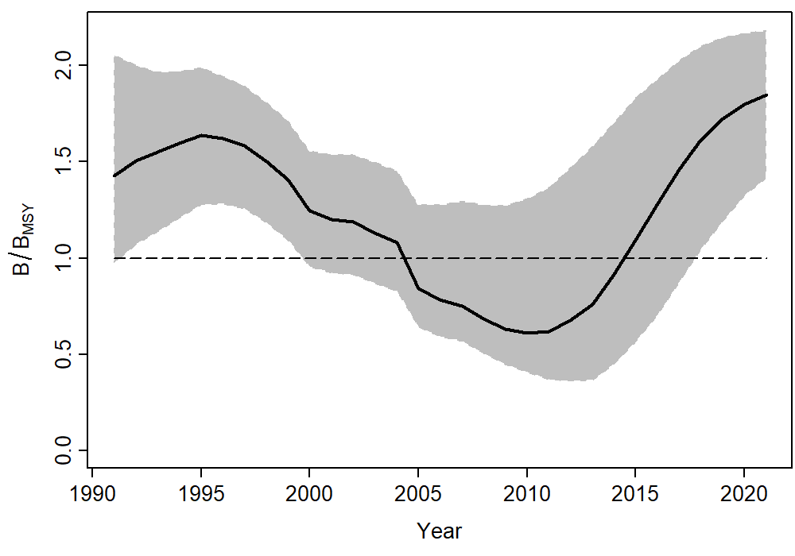
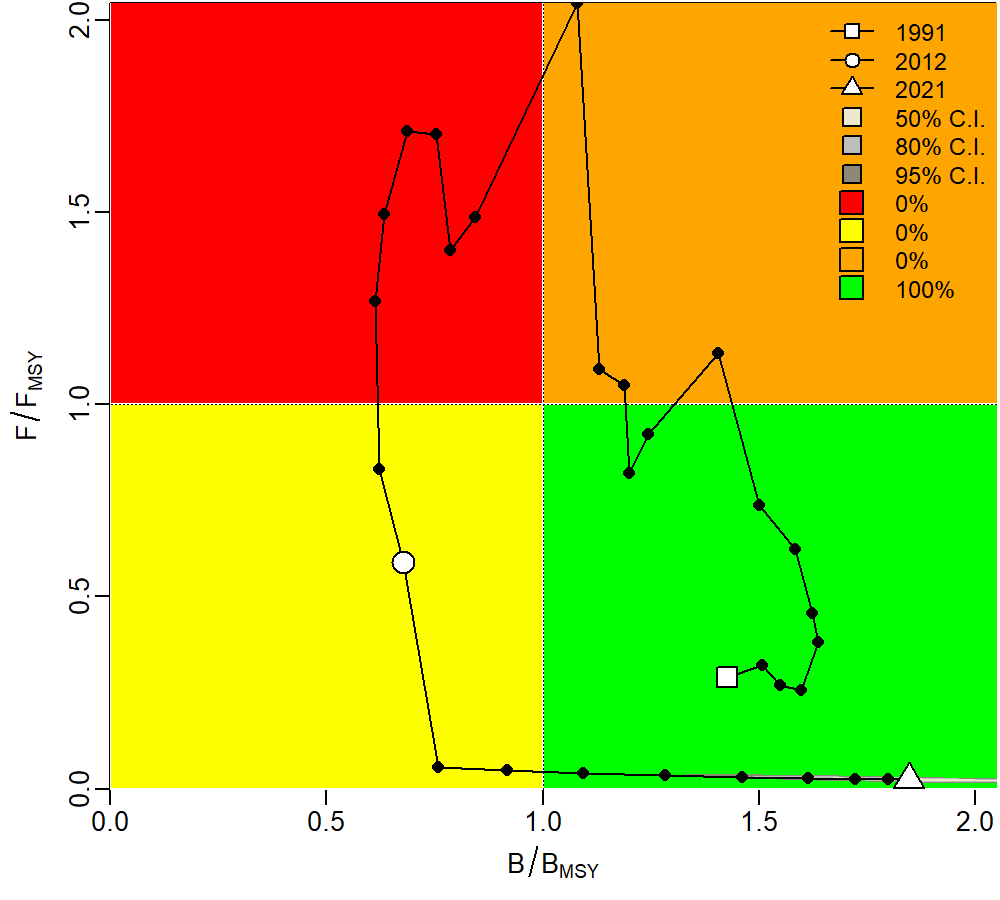
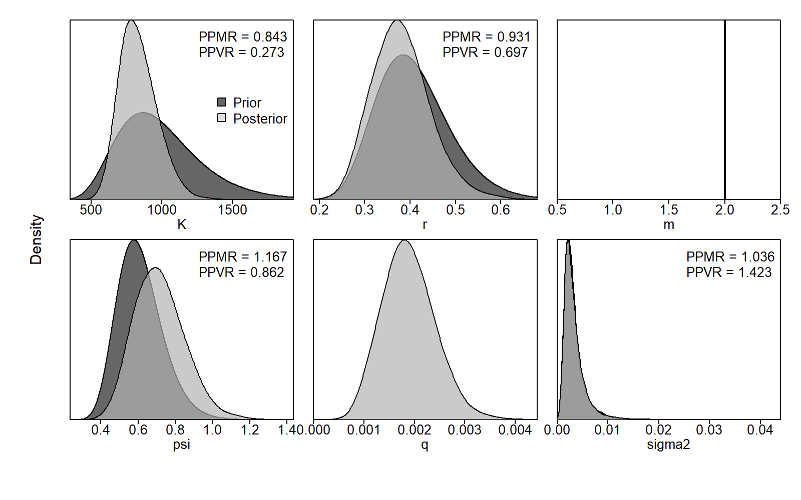
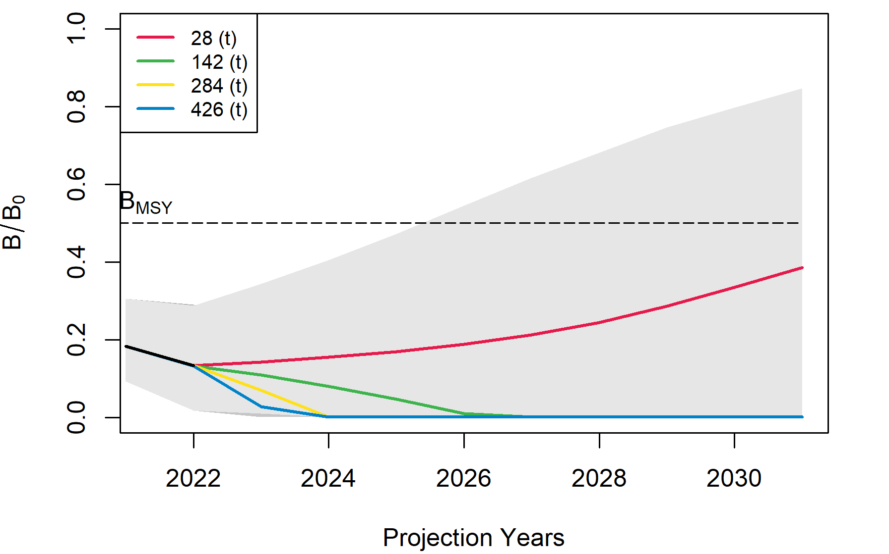

Surplus production models
Įvadas
JABBA - tai Bajeso metodais paremta perteklinės produkcijos modelių sistema, išvystyta Winker et al. 2018, vis dažniau naudojama žuvų išteklių tyrimuose.
JABBA naudoja sugavimų (laimikių) bei santykinio gausumo laiko eilutę, taip pat reikalinga pirminė (apriorinė) informacija apie: a) populiacijos augimo greitį r, b) aplinkos talpą K ir c) biomasės lygį laiko eilutės pradžioje. JABBA yra vienas sudėtingesnių pridėtinės produkcijos modelių, ir jis leidžia daryti skirtingas prielaidas apie duomenų ir modeliuojamų procesų patikimumą ir sklaidą.
Daugiau informacijos apie modelį galite rasti modelio kūrėjų puslapyje

Modelis
Pagrindinis modelio kodas yra šiame R markdown dokumente, ir šiam kodui naudojami šie pavyzdiniai duomenys, kuriuose yra pateikti 30 metų versliniai sugavimai (laimikiai), bei standartizuoti sugavimai pastangai (CPUE) su standartinėmis paklaidomis (standartizacija atlikta naudojant GLM modelį.
Modelį ir kodą galite parsisiųsti ir pritaikyti savo reikmėms. Prieš paleidžiant kodą, reikia instaliuoti JABBA, kaip paaiškinta kūrėjų puslapyje.
Norėdami pamatyti modelį ir rezultatus nevykdant kodo, spauskite čia. Pritaikę modelį ir įvykdę kodą, galėsite sudaryti biomasės laiko eilutes su pasikliautiniais intervalais (žr. pavyzdį aukščiau), nagrinėti Kobe diagramas, rodančias biomasės ir žvejybinio mirtingumo pokyčius laikui bėgant (lyginant su vertėmis, kurios leistų gauti didžiausią tvarų laimikį, žr. žemiau esantį grafiką). Taip pat galite nubraižyti aposteriorines populiacinių parametrų vertes (žr. grafiką žemiau) bei sudaryti ateities prognozes (paskutinė diagrama šio puslapio pabaigoje).


Modelio pritaikymas
Jeigu norite daugiau sužinoti apie perteklinės produkcijos modeliavimą Kuršių bei Kauno marių žuvų populiacijoms, bei susipažinti su rezultatais, kurie gali būti svarbūs priimant žuvų išteklių valdymo sprendimus, skaitykite čia ir čia arba žiūrėkite konferencijos pranešimus Kuršių marioms ir Kauno marioms.
Be to, šis modelis buvo pritaikytas Europos starkio būklės tyrime, kuriame dalyvavo institucijos iš šešių Europos šalių. Šio tyrimo rezultatus galite surasti šioje išankstinėje publikacijoje (mokslinė publikacija šiuo metu yra pateikta spaudai).
